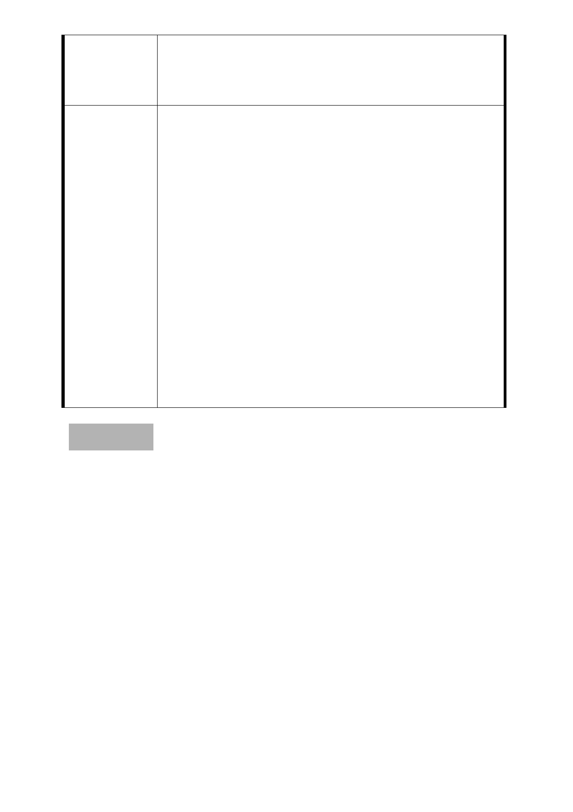

圓山站北側出口完整且連續性之步行系統，將捷運圓山站
東西兩側本市重要公共空間作有效地串接，建議仍維持劃
設為廣場用地，俾帶動觀光與商業活動，對周邊地區整體
發展有實質助益。
一、 本案原公展計畫書內之庫倫街北側部分土地，同意由
第三種商業區(特)變更為廣場用地，該廣場用地上不
得 設 置 停車 場 或 離 街 裝 卸 貨 停 車 場 之 出 入 口 或 通
道。前述內容由市府先行依程序辦理公告發佈實施。
二、 至於原公展計畫書內之庫倫街南側部分土地變更為
委員會議決議
廣場用地一節，本次會議市府基於營造良好公共空
間、推動地區再生計畫，並考量未來觀光遊憩人潮休
憩需求增加之可能性，增加公共開放空間與週邊人行
空間系統性完整規劃等理由，將庫倫街南側廣場用地
規模增加，本委員會予以同意市府所送修正版本。惟
調整後之計畫內容請市府擬具以第三種商業區(特)
變更為停車場兼廣場用地之計畫內容與土地使用管
制，重新辦理公開展覽程序。
討論事項 二
案名：變更臺北市士林區福林段三小段 785 地號等機關用地為商
業區主要計畫案
案情概要說明：
一、計畫範圍及面積：本計畫區位於士林區福林里，西臨中山北
路五段，北臨中正路，東側及南側毗鄰福林公園。計畫面積
8,418 平方公尺。
二、本計畫範圍目前土地使用分區為加油站用地、郵政用地、電
信用地。
三、計畫緣起：
（一）本計畫區於民國 59.7.4 公告之「陽明山管理局轄區主要計
畫案」內劃定為「行政區」，並於民國 66.10.19 公告之「擬
定士林舊市區細部計畫暨配合修定主要計畫案」內劃定為
- 10 -